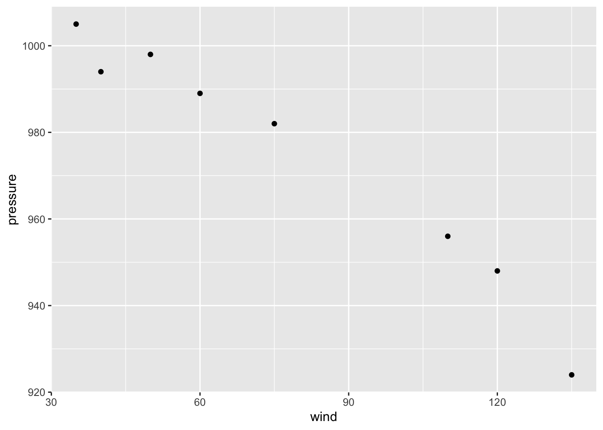
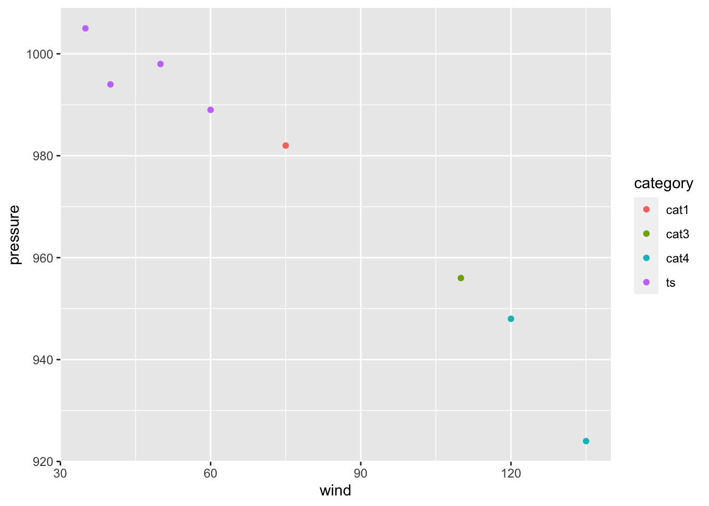
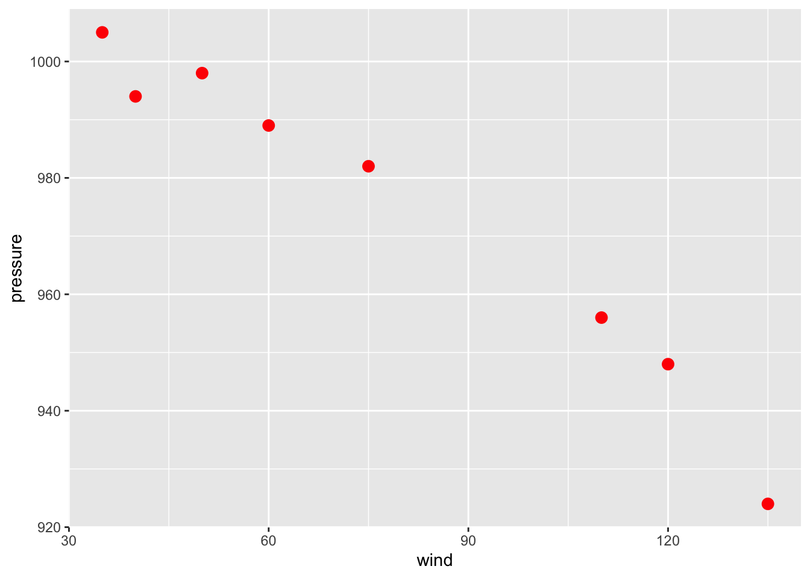
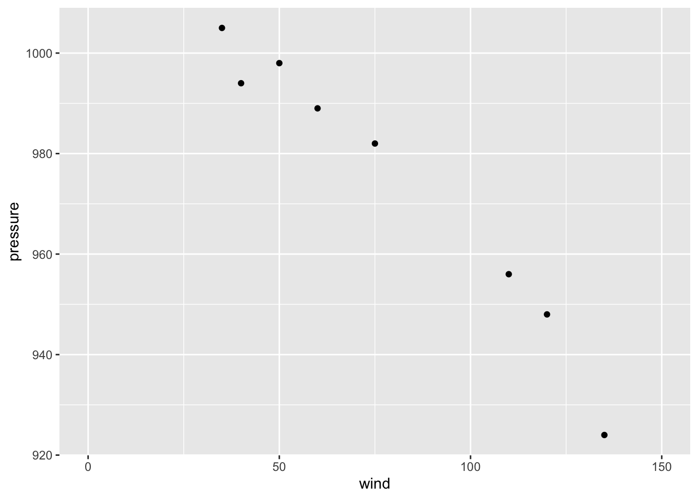
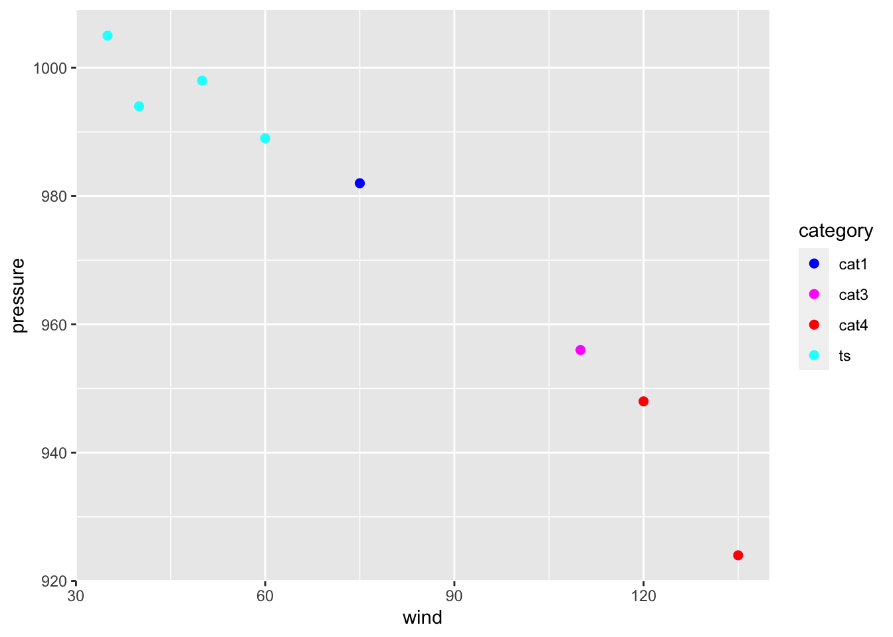
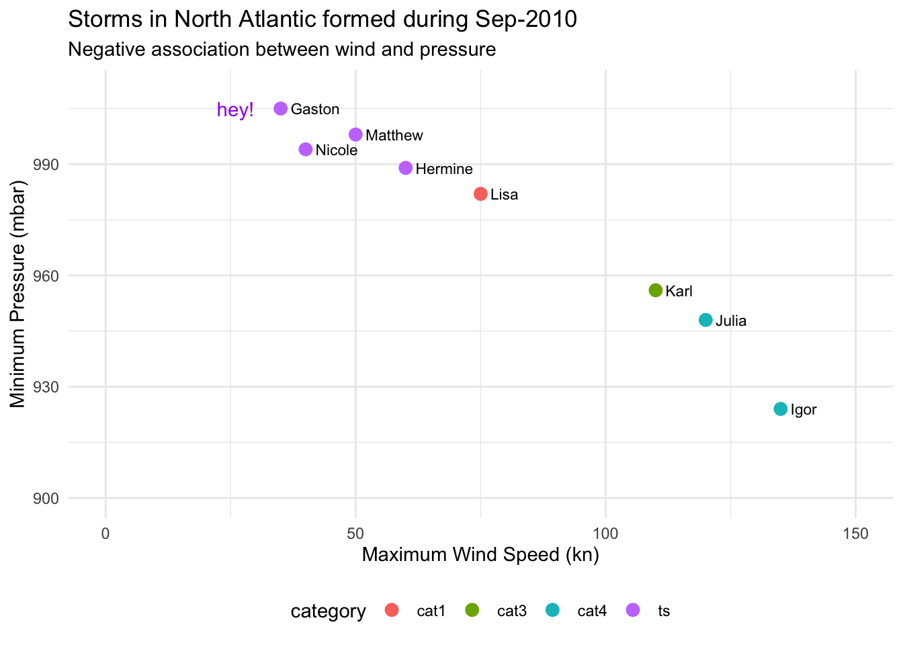

4 Graphics with "ggplot2"
As previously said, our main focus will be around what I consider to be the two primary data exploration tools from tidyverse: the packages "dplyr" and "ggplot2". The overarching approach of tidyverse is its focus on long-form data and fast intuitively named functions, which has become immensely popular.
Before we get our hands dirty analyzing the storms data set, as well as other external data sets, I want to give you a crash introduction to some of the fundamental ideas behind tidyverse. Likewise, I want to quickly review a handful of functions. The idea is to have a stepping stone that we can use to further explore the fascinating data of storms.
4.1 Sample Data
For illustration purposes, I would like to begin with a small data set. To be more specific, let’s consider data for a set of tropical cyclones that formed during the month of September 2010 in the North Atlantic. If you ask me why I’m choosing this particular set of storms, here are three random fun facts: 1) September tends to be the most active month for the formation of tropical cyclones in the North Atlantic; 2) 2010 was the year I moved to the USA, and 3) Sep-2010 turned out to have a storm named Gaston 😉.
# A tibble: 8 × 5
name wind pressure category days
<chr> <dbl> <dbl> <chr> <int>
1 Gaston 35 1005 ts 1
2 Hermine 60 989 ts 4
3 Igor 135 924 cat4 13
4 Julia 120 948 cat4 8
5 Karl 110 956 cat3 4
6 Lisa 75 982 cat1 6
7 Matthew 50 998 ts 3
8 Nicole 40 994 ts 1As you can tell, the data is in tabular format organized into five columns and eight rows. Each row corresponds to a single storm, in turn, the columns are:
nameis the name given to the storm,windcorresponds to the maximum wind speed (in knots) reached by the storm,pressurehas to do with the minimum pressure (in millibars) reached by the storm,categoryindicates the category:tsstands for tropical stormcat1is a category-1 hurricanecat3is a category-3 hurricanecat4is a category-4 hurricane
daysgives the duration of the storm in number of days
The way this data is handled in R is with a tibble object. This class of object provides the rectangular structure to store tables in tidyverse, and it is central to this ecosystem.
Recall that tibbles are printed in a very peculiar form:
the number of rows that are displayed is limited to 10;
depending on the width of the printing space, you will only see a few columns shown to fit such width,
underneath the name of each column there is a three letter abbreviation inside angle brackets,
this abbreviation indicates the data type used by R to store the values:
<chr>stands for character data<dbl>means double (i.e. real numbers or numbers with decimal digits)<int>indicates integer
Here’s the command I’ve used to create this tibble:
sep2010 <- tibble(
name = c('Gaston', 'Hermine', 'Igor', 'Julia', 'Karl', 'Lisa', 'Matthew', 'Nicole'),
wind = c(35, 60, 135, 120, 110, 75, 50, 40),
pressure = c(1005, 989, 924, 948, 956, 982, 998, 994),
category = c('ts', 'ts', 'cat4', 'cat4', 'cat3', 'cat1', 'ts', 'ts'),
days = c(1L, 4L, 13L, 8L, 4L, 6L, 3L, 1L)
)To create a tibble you use the tibble() function. One option to organize the content is by passing individual vectors (one vector per column) separated by commas.
4.2 Basics of "ggplot2"
With the sep2010 data, we may be interested in obtaining a graphic to visualize the association between wind and pressure, like the following scatter plot:

4.2.1 Some Terminology
Before I show you how to produce the above scatter plot, it’s important to introduce some of the key terminology used in "ggplot2":
The starting point is the data that we want to visualize. The convention is to have data in a table object (e.g.
data.frame,tibble) in which variables are stored as columns.Then we have so-called geoms, short for geometric objects; these are basically things such as bars, lines, points, polygons, and other kind of marks that are drawn to represent the data.
Geoms have visual properties, formally known as aesthetic attributes, and colloquially referred to as aesthetics; these are things such as \(x\) and \(y\) positions, line color, fill color, point shapes, etc.
The use of a variable to encode a visual property of a geom is called a mapping.
Scales are used to handle the mapping from the values in the data space to values in the aesthetic space.
Guides are those auxiliary elements that allow the viewer to decode the mapping of the visual properties back to the data space. Perhaps the most typical guides are the tick marks, the labels on an axis, and legends (when applicable).
At its core, graphing data can be reduced to mapping (or associating) data values to visual properties of geometric objects. The data values tend to be expressed in numerical or categorical scales, while the visual properties include the \(x\) and \(y\) positions of points, colors of lines, height of bars, and so on.
At a glance, mapping a number with an \(x\) coordinate may seem very different from mapping a number with a color of a point, but at the conceptual level, these two seemingly different mappings are equivalent.
In the grammar of graphics, this deep similarity is not just recognized, but made central.
4.3 Basic Scatterplot
A basic ggplot() specification looks like this:
ggplot(data = sep2010, aes(x = wind, y = pressure))This creates a ggplot object using the data frame sep2010. It also specifies default aesthetic mappings within aes():
x = windmaps the columnwindto the \(x\) positiony = pressuremaps the columnpressureto the \(y\) position
"ggplot2" has a simple requirement for data structures: they must be stored in data frames or tibbles, and each type of variable that is mapped to an aesthetic must be stored in its own column.
After we’ve given ggplot() the data frame and the aesthetic mappings, there’s one more critical component. We need to tell it what geometric objects to put there. At this point, "ggplot2" doesn’t know if we want bars, lines, points, or something else to be drawn on the graph.
We’ll add geom_point() to draw points, resulting in a scatter plot:
ggplot(data = sep2010, aes(x = wind, y = pressure)) +
geom_point()
4.3.1 Storing a ggplot object
If you are going to reuse some of these components, you can store them in variables. We can save the ggplot object in an object called gg, and then add geom_point() to it.
gg = ggplot(sep2010, aes(x = wind, y = pressure))
gg + geom_point()4.3.2 More Mappings
We can also map the variable category to the color of the points, by putting aes() inside the call to geom_point(), and specifying color = category
gg + geom_point(aes(color = category))
This doesn’t alter the default aesthetic mappings that we defined previously, inside of ggplot(...). What it does is add an aesthetic mapping for this particular geom, geom_point(). If we added other geoms, this mapping would not apply to them.
4.3.3 Setting Values
Contrast this aesthetic mapping with aesthetic setting. This time, we won’t use aes(); we’ll just set the value of color directly to "red". And we’ll also increase the size of the dots by setting size:
gg + geom_point(color = "red", size = 3)
4.3.4 Customizing Scales
We can also modify the scales; that is, the mappings from data to visual attributes. Here, we’ll change the \(x\) scale so that it has a larger range:
gg + geom_point() + scale_x_continuous(limits = c(0, 150))
If we go back to the example with the color = category mapping, we can also modify the color scale and customize them with our own values:
gg +
geom_point(aes(color = category), size = 2) +
scale_color_manual(values = c("blue", "magenta", "red", "cyan"))
4.3.5 Themes, Annotations, etc
Some aspects of a graph’s appearance fall outside the scope of the grammar of graphics. These include the color of the background and grid lines in the graphing area, the fonts used in the axis labels, annotations, text in the graph title & subtitle, legend details, and things like that. These are controlled with auxiliary functions such as labs(), theme(), or annotate().
gg +
geom_point(aes(color = category), size = 3) +
geom_text(aes(label = name), hjust = 0, nudge_x = 2, size = 3) +
scale_x_continuous(limits = c(0, 150)) +
scale_y_continuous(limits = c(900, 1010)) +
labs(title = "Storms in North Atlantic formed during Sep-2010",
subtitle = "Negative association between wind and pressure",
x = "Maximum Wind Speed (kn)",
y = "Minimum Pressure (mbar)") +
annotate(geom = "text", x = 26, y = 1005, label = "hey!", color = "purple") +
theme_minimal() +
theme(legend.position = "bottom")